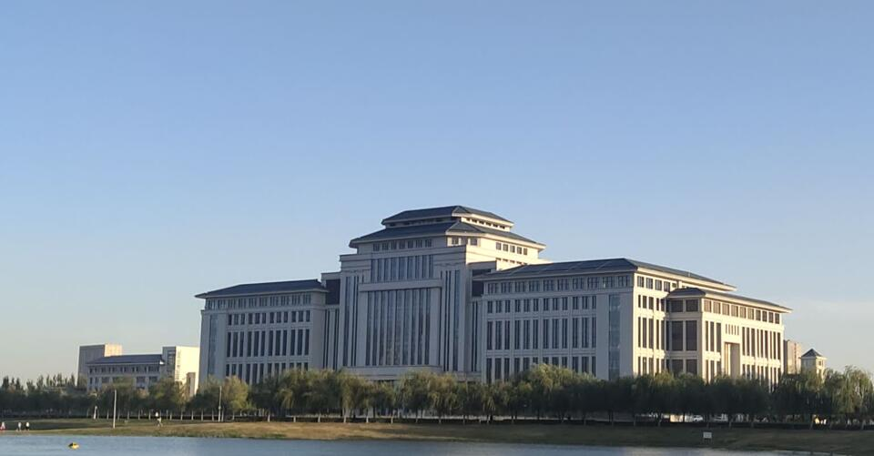
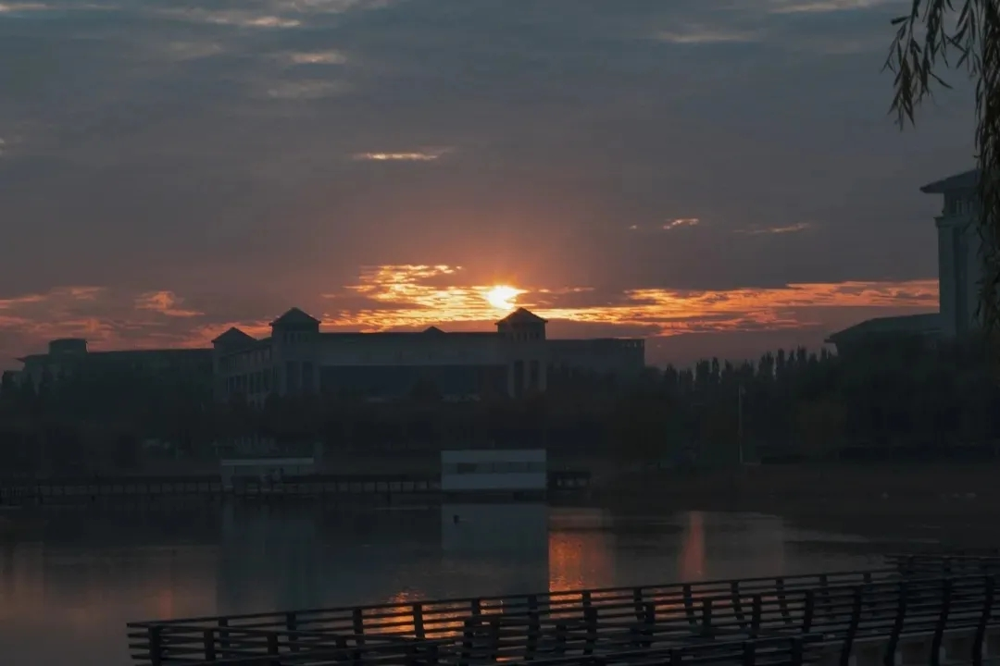
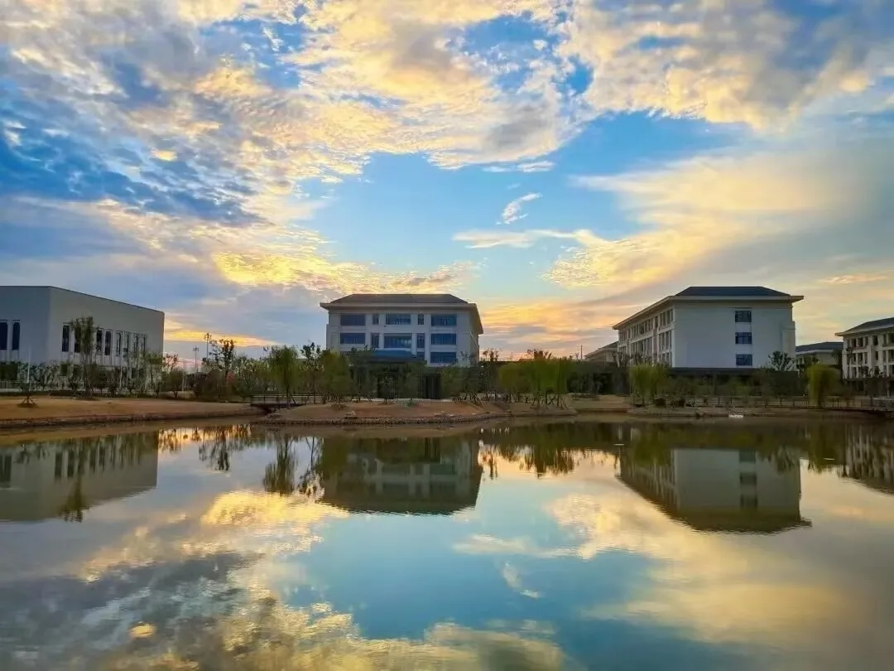
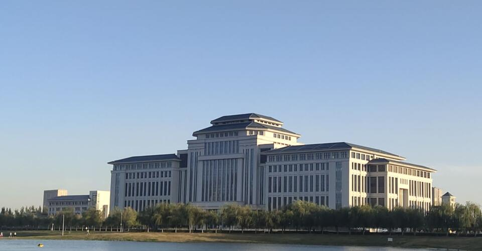
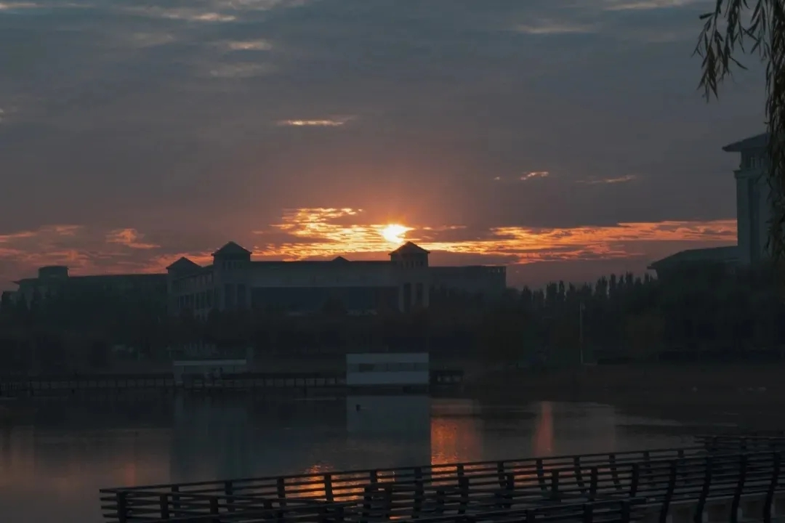
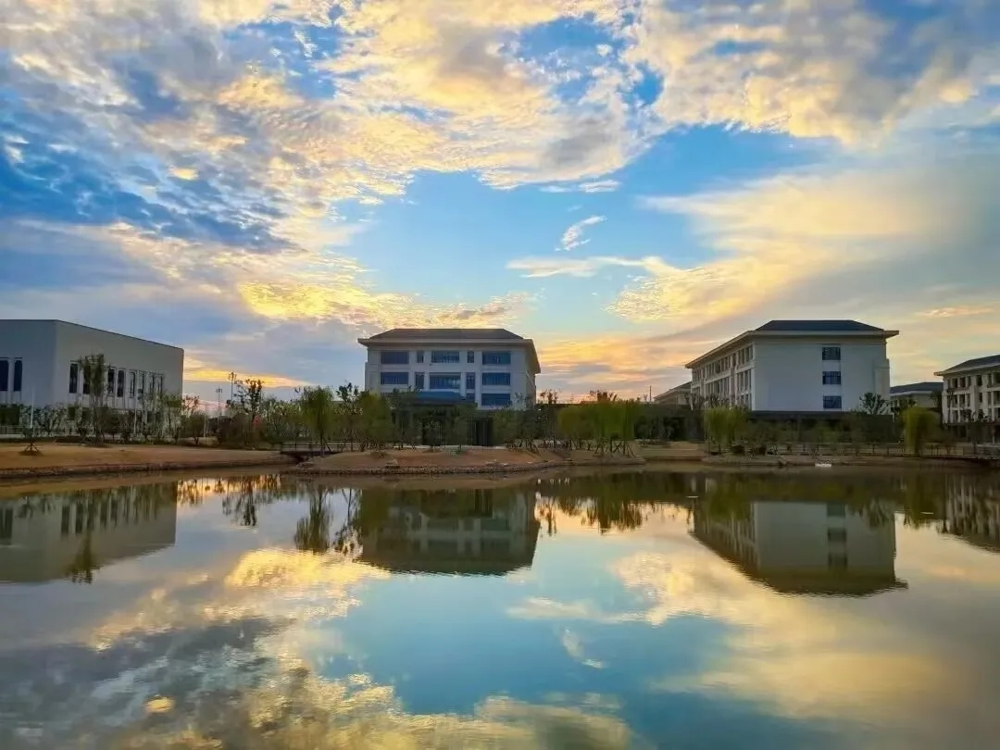

个人简介
自序
大家好，我是一名来自华水信息工程学院的学生，今年20岁，来自甘肃兰州。性格比较随和，很好相处，喜欢在大学开拓自己的视野。平时喜欢夜跑、打FPS类游戏、刷B站、学习等等。关于学习，我觉得在大学学习也不能放松，不能为了读书而读书，应该要为自己的将来考量，在大学自学尤为重要。关于生活，我觉得社会实践尤为重要，大学就是一个跳板，能跳多高最重要的一部分取决于在大学的磨练了多少，所以好好珍惜大学四年时光，一起加油吧！
此处省略一千字
此处省略一千字
此处省略一千字
梦想
相信大家都有自己的梦想吧！对我而言最大的梦想莫过于环球旅行了，在B站上也看过了许许多多的旅游UP主。很钦佩他们的勇气，尽管有的英文被戏称“工地英语”，但是能沟通的就是好英语，不像在学校大都只会哑巴英语。也很羡慕他们，老了的时候回忆这一生去过数不清的地方，那该多开心啊，这样的人生想必是十分精彩的。
up:冒险雷探长（因为撩妹厉害，被粉丝调侃为“妇女之友”，他的视频已经出了一个同名纪录片，比较深入，一个国家会介绍好几个视频，大概几小时）
喜欢玩各种游戏，对游戏开发有兴趣，希望以后可以从事相关的工作。
技术栈
| 语言 | 定位 | 熟练度 |
|---|---|---|
| C/C++ | 后端 | 三星 |
| Java | 后端 | 两星 |
| Javascript | web | 三星 |
名言阁
非淡泊无以明志，非宁静无以致远 -- 诸葛亮
为中华之崛起而读书 -- 周总理
读书是进步的阶梯 -- 高尔基
问渠哪得清如许，为有源头活水来 -- 朱熹